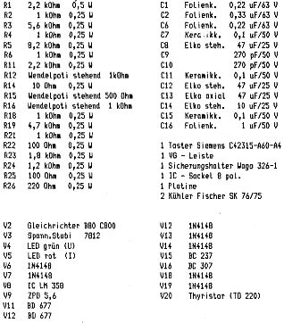
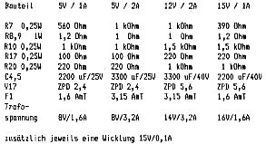

80-Bus Journal |
Juli/Aug./September 1984 · Ausgabe 3 |
3 Stück
BASF 6106
Floppy-Laufwerke
gebraucht, aber getestet
und in einwandfreiem Zustand.
DM 260,– pro Stück
Interessenten melden sich bei der Redaktion
von Dieter Metzler
Die Arbeitsweise von klassischen Netzteilen ist sicherlich aus div. Veröffentlichungen hinreichend bekannt, ich beschränke mich daher auf eine Kurzbeschreibung:
Das vorliegende Netzteil arbeitet mit dem althergebrachten Längsregler. Strom- und Spannungsregelung werden von einem OP übernommen. Eine rückläufige Kennlinie sorgt auch bei Kurzschluß für ausgeglichene Lastverhältnisse. Das Netzteil wird durch entsprechende Beschaltung von 5…8 oder 12…15V einstellbar (siehe Widerstandstabelle). Der maximale Strom beträgt 1A (2A bei Bestückung mit 1N5402). Ein Überspannungsschutz sorgt für schnelle Abschaltung bei Spannungsspitzen. Die herausgeführten Fühlerleitungen können die Spannung an jeder beliebigen Busstelle kontrollieren.
Das Netzteil kann mit Durchkontaktierungen als +5, −5, +12, +15 oder −15 V Einheit betrieben werden. Die Schaltung befindet sich komplett mit Kühlern auf einer Europakarte, der Anschluß erfolgt über eine VG-Leiste an den ECB – Bus. Die Wechselspannungen werden direkt an den Bus gefuhrt, die weiterführenden Bahnen müssen natürlich unterbrochen werden. Die I- und U-Regelfunktionen können mit Leds an der Frontplatte angezeigt werden. Die nötige Einbaubreite beträgt 6 TE (ca. 30mm).
| Vorteile: |
hochwertiges Netzteil mit rückläufiger Kennlinie (versehentliches Vertauschen der beiden Spannungen an den Laufwerken blieb bei mir ohne Folgen!!) Servicefreundlichkeit (bei mir laufen allerdings 5 solcher Netzteile seit 1 Jahr ohne jeden Serviceanspruch) optimaler Schutz mehrere Netzteile können parallel geschaltet werden, es existiert aber noch eine 5V, 5…10A-Version für Rückwandmontage im Baugruppenträger. |
| Nachteile: | |
|
für jede Spannung ein extra Netzteil, für jede Karte ist eine zusätzliche Wechselspannung von ca. 15V, 100mA notwendig. | |
Entsprechende Trafos kann ich aber preiswert wickeln lassen. Bei genügender Nachfrage werden wie üblich Platinen gefertigt und in der bekannten Qualität zu den entstandenen Selbstkosten von DM 60.– angeboten.
Zuerst müssen die Durchkontaktierungen für die Anpassung an den Bus eingesetzt werden, weil diese nach Montage der Kühlkörper nur noch schlecht erreichbar sind. Anschließend werden die Kühler montiert: zuerst Schrauben von Lötseite her mit Muttern befestigen, damit zwischen der Platine und den Kühlern ein Zwischenraum entsteht, anschließend die Halbleiter montieren. Der Transistor am gemeinsamen Kühler ist isoliert zu montieren. Die weitere Montagereihenfolge ist unerheblich.
Spannungen anschließen und eventuell Ströme kontrollieren. (Sicherung für 1A – Version 1,6AmT, für 2A – Version 3,15AmT) Sollspannung mit Poti einstellen und Netzteil mit 1A bzw. 2A belasten. I-Regler so einstellen, daß bei dieser maximalen Sollast die Regelübernahne des I-Teils einsetzt. Kurzschlusstest durchführen: der Strom muß auf etwa 1/4 bis 1/5 des maximalen Stroms zurückgehen. Jetzt den Thyristor montieren und anlöten, Überspannungspoti so einstellen, daß bei Hochdrehen der Sollspannung um ca. 0,5V der Überspannungsschutz zuschlägt. (Entriegeln durch Taster oder Ausschalten) Wenn die Fühlerleitungen nicht gebraucht werden, sind die Dioden V12 und V13 durch Drahtbrücken zu ersetzen.


| Seite 12 von 52 |
|---|